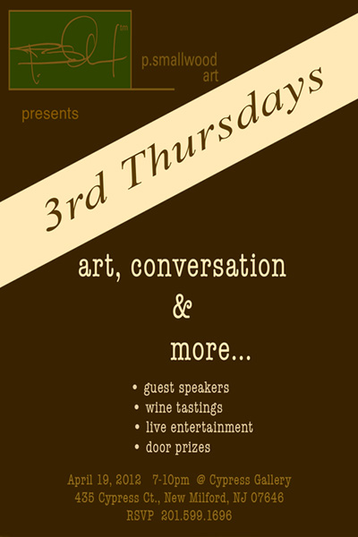
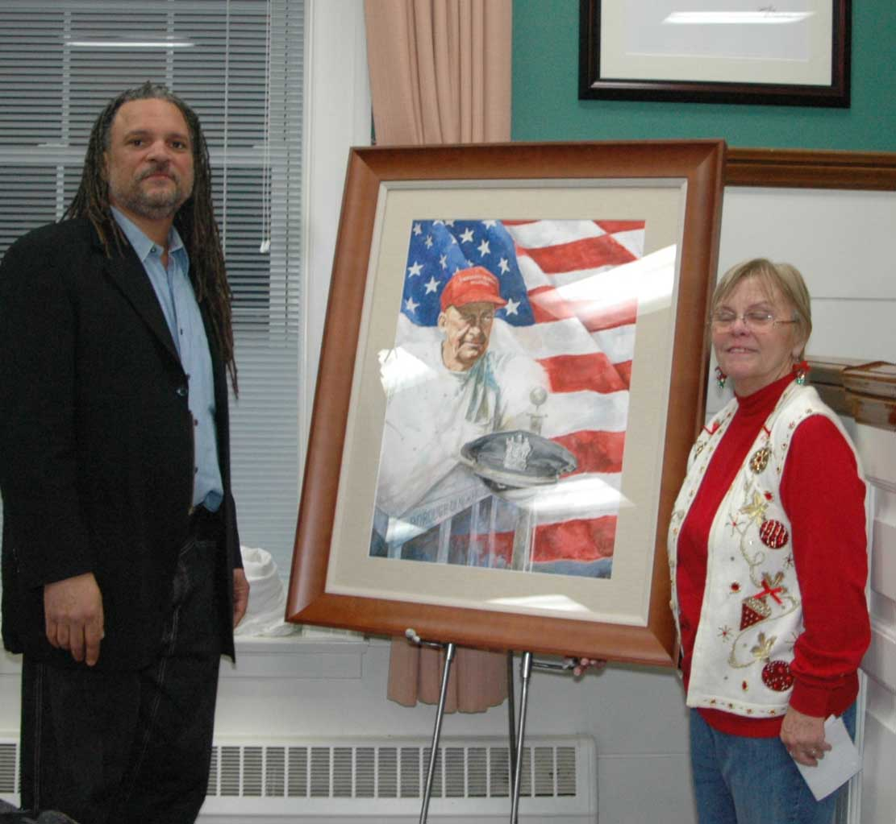
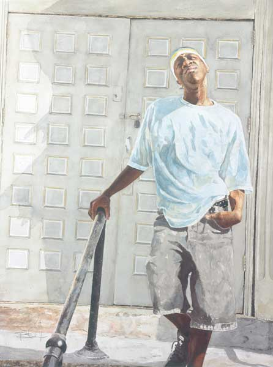
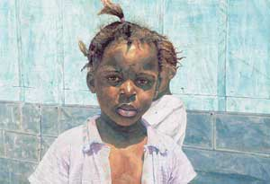

|


P. Smallwood Honors William Klinger of New Milford, New Jersey
On December 13, 2010, P. Smallwood presented a memorial portrait of William Klinger to the town. The original watercolor portrait reflects Mr. Klinger's contributions to New Milford.
A plaque was also be presented to Mrs. Klinger in honor of her husbands service to New Milford and the courtroom will be re-dedicated in his name. The event took place at the New Milford Borough Hall.
Award winning artist unveils paintings that shines light on growing up in the Bronx
May 2010
New Milford, NJ - Water color artist Philip Smallwood, known for his signature watercolor paintings, or as he calls them, "lifescapes," has completed a series of six original works that depict a young African American male growing up in the Bronx, New York City and all of the challenges of a metropolitan urban environment that he faces.
The focal point of this series is someone who Smallwood has worked with on several projects.
Smallwood observed the young man was at a crossroads in his life, where his choices were either to become a strong independent person or fall victim to the many negative influences that envelope inner- city youth.
"I found Rasheed to be a good person, ambitious, hard working, and hoped that my mentoring would help point him in the right direction," Smallwood said reflecting back on his relationship. "I was hopefully able to connect with this young person and make an impact."
Smallwood's hope is that observers of his work will pause and take a closer look at the person. The intent is to intimately share with the viewer something they may, or would not see in their everyday travels.
Being a portrait painter, Smallwood's objective is to provide the viewer with a more intimate look at what might seemingly be a common person or moment.
"Through my paintings, I ask the viewer to stop, engage, and experience the individual lives portrayed- with all of their aspirations, dreams and desires, seeing them as worthy of observation," Smallwood explained.
"I want to bring my subjects into the world in a majestic and profound way, to put them on a pedestal and make them royalty in terms of artistic content."
This is the reason that Smallwood and others refer to his paintings as "lifescapes" visual imagery that translates into a powerful form of portraiture.
Through his work in watercolor, Smallwood has found a medium that allows him to blend his love of the human form with light, color, and a fluid surface ideal for telling the human narrative that has become the heartbeat of his work.
Smallwood's work has been shown in solo and group exhibitions nationwide including Carolina Galleries, Bryant Galleries, Craven Gallery, The Parish Art Museum, and The Studio Museum of Harlem.
Other works and more information can be found on Smallwood's web site at www.psmallwood.com.
New Milford artist receives congressional commendation
Thursday, April 1, 2010
BY STEVE KELMAN
Twin-Boro News STAFF WRITER
Watercolor artist Phil Smallwood of New Milford recently participated in a first-of-its-kind art exhibition held at the Bergen County administration building in Hackensack - and received a commendation from Congress for doing so.
Smallwood, along with three other artists - Jim Edmonds and Jacqueline Collier of Teaneck, and Moses Groves of Englewood - displayed their works there throughout February in connection with Black History Month.
"The historical significance of this showing is that this was the first time that African-American artwork was solely exhibited in a public building in Bergen County," Smallwood said
Smallwood said the title of the exhibition was "Art From the Soul," which was curated by Joanne Bryant Reed, an assistant chairwoman for the Romare-Bearden Foundation and retired Meryl Lynch executive.
The four artists were honored at a reception at One Bergen County Plaza, attended by members of the community and county officials, Smallwood said.
They were presented with a Certificate of Special Congressional Recognition from Rep. Steve Rothman's Fair Lawn office, along with a Certificate of Commendation from the county, presented by County Executive Dennis McNerney.
Bryant-Reed praised Smallwood and said that his artwork, "always connects with the audience."
"His work is detailed and you find yourself in the scene as a participant not as a viewer, but as a real participant," she said.
"His artwork has a way of drawing you in... Phil is inspired by life itself and uses his surroundings and memories to determine what he wants to say with his work."
Besides being part of the exhibition in Hackensack, Smallwood has earned some other honors as well.
"I was selected 'Best in Show' at the 24th annual International Art Exhibition in Philadelphia," he said, "the first watercolor artist garnering this distinction in the history of the exhibition." Smallwood also took first place at the New Jersey Watercolor Society member show, which was held at the Guild of Creative Art in Shrewsbury last fall. Smallwood has been a "signature member" of the organization for the past 10 years.
For more about Smallwood's artwork, log on to www. psmalllwood.com or contact his New Milford studio at 201-599-1696.
Smallwood's watercolors are 'Lifescapes'
By Dottie Ashley
Special to The Post and CourierSunday, January 31, 2010
When Philip Smallwood rides in a New York cab, he doesn't just watch the meter. He often studies the cab driver in the rear-view mirror, examining his wrinkles, or the lack of them and the expression in his eyes.
Upon reaching his destination, Smallwood may ask permission to shoot the cabbie's photograph as the possible template for a watercolor.
"Mostly, they say 'yes,' " Smallwood says in an interview from his home studio in Milford, N.J. "Sometimes, if I'm in a car and stop at a red light and someone standing nearby looks interesting, or somebody intriguing is walking down Broadway, I may just snap the photo right then.
"However, if I'm in a restaurant and notice someone I want to sketch, I go over and introduce myself, tell them what I'm doing so they will be at ease; usually they are flattered," explains Smallwood.
Born in New Jersey, the artist has connections to South Carolina. One of his sisters lives in Sumter, and his mother lived there for a time.
Smallwood first visited Charleston in 1996 when he made the first of many tours through the Southeast, which inspired a body of work influenced by Southern rural families.
In celebration of Black History Month, Smallwood's exhibit, "Lifescapes," featuring 20 of his watercolors, opens Friday at Carolina Galleries, 106-A Church St.
The African-American artist will be honored at a reception at 5-8 p.m. Friday, followed by a lecture on his work at 6:30 p.m. Both events are free and open to the public.
"Lifescapes" runs through February.
Although mainly consisting of scenes from the South, the collection also includes several paintings depicting a boy growing up in New York City, which Smallwood says marks a shift to a more edgy, intense urban setting.
Smallwood calls his style "Lifescapes" because his goal is to engage the viewer and make him wonder about the subject's aspirations, dreams and desires.
Growing up in New Jersey, Smallwood considered going into medicine and enrolled in the pre-med program at the University of Miami.
"In anatomy classes, I drew the human figure a great deal, and when growing up, I was interested in tracing and then drawing," he says. "Also, as a child, I was influenced by Norman Rockwell's illustrations for the covers of the Saturday Evening Post; I felt you truly had a glimpse into these people's lives."
The artist is often inspired by people who aren't having it so good these days.
"These are people often overlooked because of their specific circumstances," he says. "I want viewers to get a really good look at these people."
Smallwood is now painting the portrait of saxophonist Tony Smith for Smith's new CD cover.
"I'm a huge jazz fan," says Smallwood. "One of my greatest thrills was when I was commissioned to paint a portrait of Duke Ellington for the Duke Ellington Centennial."
The artist signs his work, "P. Smallwood" and has exhibited in The Studio Museum in Harlem, The Parrish Museum in South Hampton, N.Y., and at the Philadelphia International Expo.
Special Art Opening of P. Smallwood's Watercolor Paintings at Carolina Galleries,
February 5
January 18, 2010 by cfada
Watercolor artist P. (Philip) Smallwood will be talking about his Charleston and regionally focused work at Carolina Galleries. Philip will be in the gallery for a special opening of his watercolor paintings on February 5, 2010 from 5-8 pm, with an artists lecture at 6:30 p.m.
Philip Smallwood is known for his signature "Lifescapes", a wonderful form of portraiture and visual narrative. His Lifescapes are intended to engage the viewer and allow them to connect with the subject's emotional experience of life. In his painting Destiny, the little girl looks directly at the viewer. Her expression and the detail of her face draw the viewer in and wanting to know more about her. In other works, the viewer feels as if they have walked into a slice of the subjects life.
"Through my paintings, I ask the viewer to stop, engage and experience the individual lives portrayed - with all their aspirations, dreams and desires - and really see them as worthy of their observation. I want to bring my subjects into the world in a majestic and profound way, to put them on a pedestal and make them royalty in terms of the artistic content." Smallwood explains.
As a primarily self-taught artist, the process by which he creates a Lifescape is intuitive and exploratory. Philip creates from his own vision rather from any particular artistic school. His artistic vision is unique, specific and intentional. Philip Smallwood's work is also highly drafted and finely finished. Before becoming a full time fine artist, Philip founded Woodtopia, Inc., a furniture fabrication and design company that produced commercial and one-of-a-kind artisan pieces. The artisan works, including functional objects such as tables and chairs, challenged the traditional expectation of line and form. The experience of designing and woodworking enabled Smallwood to experiment with volume, line, form, finish and artistic representation. These are all elements that play an important role in the composition of Philip's work today. Examples of his use of form and line are evident in his watercolor My Turn, which is on display at Carolina Galleries now. This piece gives a window frame, with its' dark vertical and horizontal lines, an important part in the overall composition.
Smallwood, who currently resides in New Jersey, spent many years living and traveling throughout the Southeast and much of his work is inspired by rural families in the South. Charleston has always been source of inspiration for Philip. However, Smallwood is currently working on a new body of work that highlights a young man growing up in New York City. This new series marks a shift to a more edgy and intense urban setting. This recent body of work gives a sense a familiarity to anyone who lives in a metropolitan city in the US. A few pieces from this series will be on view at Carolina Galleries on February 5th. Philip Smallwood is often inspired by people who may be experiencing unfortunate circumstances. He enjoys portraying them in an idealist way. He believes this gives the viewer a chance to really look at the good in these people. His subjects are often people that a viewer may not take the time to get to know because of their specific circumstances.
Smallwood attended the University of Miami and graduated with a B.S. in Biology and a Minor in Art. Through watercolor, Smallwood found a medium that allowed him to blend his love of the human form with light, color and a fluid surface ideal for telling the human narrative that has become the heartbeat of his work. Today, his Lifescape watercolors are the culmination of his artistic relationships with structure, shape, volume, finish, light and color filtered through the eye of his life experiences and values.
Philip's work has been shown in solo and group exhibitions, including The Craven Gallery, The Parrish Art Museum in South Hampton and The Studio Museum in Harlem. In October of 2009, Philip was honored with 'Best in Show' at the Philadelphia International Art Expo. Last year, he also was awarded by the New Jersey Watercolor Society for his outstanding work.
For more information on Philip's work or the opening & artist talk on February 5th, please contact the Carolina Galleries at (843) 720-8622 or visit them online at www.carolinagalleries.com.
Faces of Feeling (Click to launch PDF)
|
{kind=link}